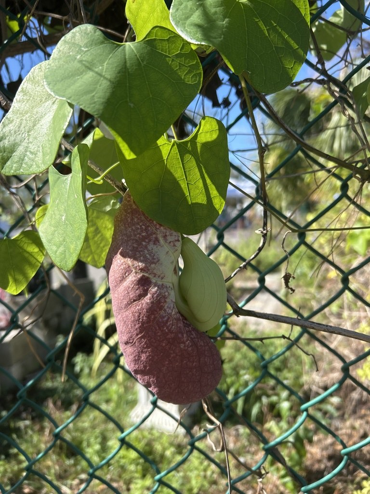

- That enormous burgundy bloom on the nursery fence is the Brazilian Dutchman's Pipe — a velvety, ivory-veined flower up to a foot or two long, shaped like an old smoking pipe.
- Here's the secret most people miss: it doesn't stop at the fence. The vine climbs some 30 feet up into the shade tree above the nursery — so when it's in season, look UP and you'll find it blooming all through the branches.
- Give the flower a sniff — many notice an odd scent like old lemon furniture polish. That's no accident: the smell is bait for the flies that pollinate it.
- The genus name Aristolochia means 'best childbirth' — the curved flower bud reminded ancient herbalists of a baby in the womb.
Native to the humid tropical forests of Central and South America, from Costa Rica and Panama south into Brazil — hence 'Brazilian' Dutchman's Pipe. A fast-growing, evergreen, woody twining vine that scrambles up trees and structures in the wild, exactly as ours climbs the nursery shade tree.
- The Brazilian Dutchman's Pipe is all about its outrageous flower. Apetalous (it has no true petals — the showy part is a modified, corolla-like calyx), the bloom forms a velvety burgundy pouch netted with ivory-white veins, up to 12 to 24 inches long, curved like the bowl and stem of an old Dutch smoking pipe — the source of the common name.
- The genus name Aristolochia comes from the Greek aristos ('best') and locheia ('childbirth'): the curled flower bud reminded ancient herbalists of a fetus in the womb, and the birthwort family was long used (dubiously and dangerously) in childbirth medicine.
- At Palma Sola the vine hangs on the nursery fence, where its giant blooms stop visitors in their tracks — they're stunning, and they carry a curious odor many compare to old lemon floor polish. That scent is the plant's pollination strategy: it lures flies, not bees.
- A fly drawn in descends the flower's tube past one-way, downward-pointing hairs that let it enter but not leave, trapping it overnight among the pollen; when the hairs wither, the fly escapes dusted with pollen to be fooled by the next bloom.
- The best part is the reveal. Most visitors only notice the flowers at fence height — but the vine climbs roughly 30 feet up into the tree that shades the nursery, and at the right time of year it blooms all the way up the trunk and out along the branches. Telling someone to 'keep looking up' and watching them spot pipes hanging high overhead is one of the small joys of the spot.
The Brazilian Dutchman's Pipe carries a bittersweet ecological story. Its flowers are pollinated by flies, briefly trapped inside the pipe-shaped bloom and released carrying pollen. But its relationship with butterflies is a cautionary one.
Native North American pipevines are vital host plants for the pipevine swallowtail, whose caterpillars eat the leaves and take up the plant's toxins for their own defense.
This tropical cousin smells enough like those native hosts that female pipevine swallowtails are fooled into laying eggs on it, but its leaves are too toxic even for them, and the hatching caterpillars die as tiny first-stage larvae after their first meals. There is a twist, though: the Polydamas swallowtail, a tropical butterfly common in Florida, can complete its life cycle on this vine.
So the same plant is a trap for one swallowtail and a nursery for another. The whole plant contains aristolochic acid, a strong toxin that deters most browsing animals. For supporting pipevine swallowtails specifically, native Aristolochia species are the ones to plant.
A fast-growing, evergreen, woody twining vine, climbing by wrapping around supports; reaches 15-20+ feet (ours runs ~30 feet up the shade tree). Spreads by seed; the papery capsules split to release many wind-dispersed seeds.
Huge, apetalous, pouch- or pipe-shaped, velvety burgundy netted with ivory-white veins, 12-24 inches long; strongly scented to attract flies. Bloom mainly in the warm months (summer through winter in the tropics).
A papery, ribbed capsule that dries, browns, and splits to scatter 20+ winged, wind-borne seeds.
Light green, heart-shaped, up to 6 inches long, alternate along the twining stems; evergreen.
On the nursery fence, find the giant burgundy, ivory-veined pipe-shaped flowers and the heart-shaped leaves. Lean in for the odd lemon-polish scent. Then — the main event — look UP: follow the vine 30 feet into the shade tree and scan the high branches for more blooms hanging overhead in season.
Do not eat any part of this plant. The entire plant contains aristolochic acid, a potent toxin that is especially damaging to the kidneys.
Once misused in herbal remedies, it's now known to be dangerous — keep it away from children.
It's toxic to dogs as well, poisonous if any part is chewed or eaten. Keep pets away.
PARK CONTEXT (Randy): Hangs on the nursery fence and climbs ~30 ft up the shade tree over the nursery. Stunning blooms; visitors love them. Randy delights in telling people to 'look up' — in season it blooms all the way up the tree and along the branches. Flower scent likened to old lemon floor polish.
- © pspgal (CC-BY-NC), via iNaturalist